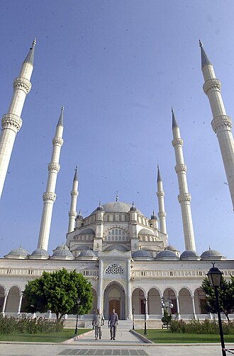

PrésentationتقديمOverview
La mosquée centrale Sabancı se situe dans le quartier Reşatbey de la ville d'Adana, en Turquie. Elle est dans le principal parc où la rivière Seyhan traverse la ville.
جامع صابانجي المركزي هو أحد أكبر الجوامع في تركيا والشرق الأوسط ، يقع على ضفاف نهر سيحان وسط مدينة أضنة التركية. تم بناءه على أنقاض مقبرة أرمنية مصادرة على مساحة قدرت بـ 52,600 متر مربع. ويعود تصميمه للمهندس المعماري نجيب دينتش.
Sabancı Merkez Mosque or Sabancı Central Mosque in Adana is the second largest mosque in Turkey. The exterior of the mosque is similar to the Selimiye Mosque in Edirne, though it has six minarets, similar to the Sultan Ahmed Mosque in Istanbul.
Sabancı Merkez Camii, Adana'nın Reşatbey semtinde, Merkez Park'ın güneyinde ve Seyhan Nehri'nin batı kıyısında 1998 yılında hizmete açılmış cami.
Masjid Sabancı Merkez adalah sebuah masjid bersejarah yang berada di kota Adana, Provinsi Adana, Turki. Masjid ini awalnya dibangun pada tahun 1998, di bekas kuburan Armenia yang disita, bagian luar masjid dan dekorasi interiornya mirip dengan Masjid Selim di Edirne, meskipun memiliki enam minaret, mirip dengan Masjid Sultan Ahmed di Istanbul. Masjid ini dibangun di atas tanah seluas 52.600 meter persegi dan memiliki area tertutup seluas 6.600 meter persegi.
Die Sabancı-Zentralmoschee in Adana ist die zweitgrößte Moschee in der Türkei und eine der größten der Welt. Sie wurde im Jahr 1998 eröffnet, Architekt war Necip Dinç.
La mezquita central de Sabanci en Adana es la mezquita más grande de Turquía. El exterior de la mezquita, y su decoración interior, son similares a los de la mezquita de Selimiye, en Edirne, aunque tiene seis minaretes, como la mezquita del sultán Ahmed en Istanbul.
La moschea centrale Sabancı è un edificio religioso di Adana, in Turchia, costruito tra il 1988 e il 1998 su progetto dell'architetto Necip Dinç, progetto finanziato dalla famiglia Sabancı. Si tratta della più grande moschea del Paese.: può ospitare fino a 28500 fedeli.
萨班哲中央清真寺 位于土耳其阿达纳，是土耳其第二大清真寺。这座清真寺的外观和内部装饰类似于埃迪尔内的塞利米耶清真寺，但是拥有6个叫拜楼，又类似于伊斯坦布尔的苏丹艾哈迈德清真寺（蓝色清真寺）。
Центральная мечеть Сабанджи или Сабанджы-Меркез — мечеть, расположенная в турецком городе Адане, на берегу реки Сейхан. Является крупнейшей мечетью Турции. Превосходит мечеть Султана Ахмета в Стамбуле как по вместимости, так и по высоте минаретов. Несмотря на внушительные размеры, выстроена менее чем за год.
Moscheea Sabanci Merkez sau Moscheea Centrală Sabanci este o moschee din Adana, Turcia. Aceasta este cea mai importantă moschee din acest oraș și totodată una dintre cele mai mari moschei din această țară.
Sur la carteعلى الخريطةOn the map
Documents et liensوثائق وروابطDocuments and links
- Wikipédia — Français
- Wikipédia — العربية
- Wikipédia — English
- Wikipédia — Türkçe
- Wikipédia — Bahasa Indonesia
- Wikipédia — اردو
- Wikipédia — Deutsch
- Wikipédia — Español
- Wikipédia — Italiano
- Wikipédia — 中文
- Wikipédia — Русский
- Wikipédia — Română
- Wikidata — Q1381468
Données : Wikidata (CC0), mises à jour tous les 3 mois. L'année est la plus ancienne date de construction connue du bâtiment : pour un édifice devenu mosquée plus tard (comme Sainte-Sophie), c'est celle du bâtiment d'origine. Photos : Wikimedia Commons, auteur et licence sur la page de chaque photo.البيانات: ويكي بيانات (CC0)، تُحدَّث كل 3 أشهر. السنة هي أقدم تاريخ معروف لبناء المبنى: فإن صار مسجدًا لاحقًا (مثل آيا صوفيا) فهي سنة المبنى الأصلي. الصور: ويكيميديا كومنز، المؤلف والرخصة في صفحة كل صورة.Data: Wikidata (CC0), updated every 3 months. The year is the earliest known construction date of the building: for a building that became a mosque later (such as Hagia Sophia), it is that of the original building. Photos: Wikimedia Commons, author and licence on each photo's page.
Grandes mosquées du mondeالجوامع الكبرى في العالمGreat mosques of the world →